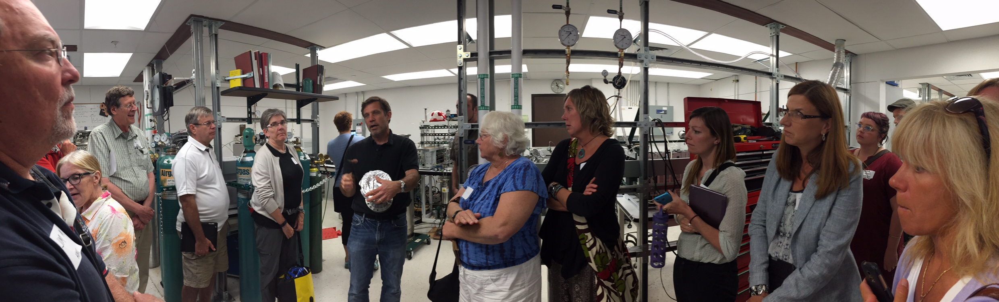
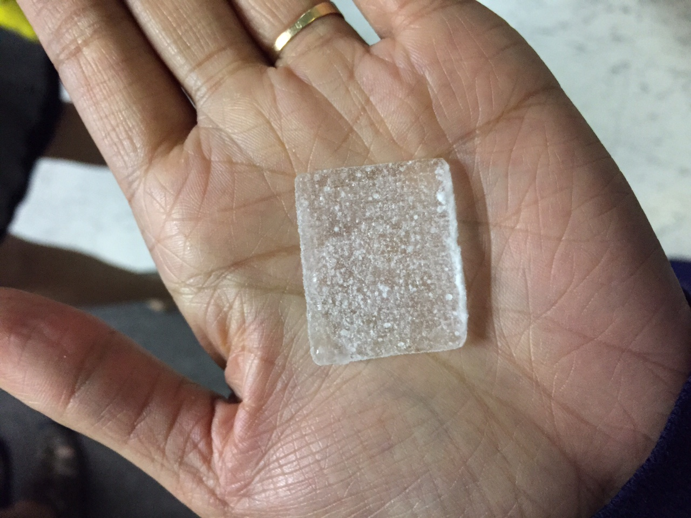
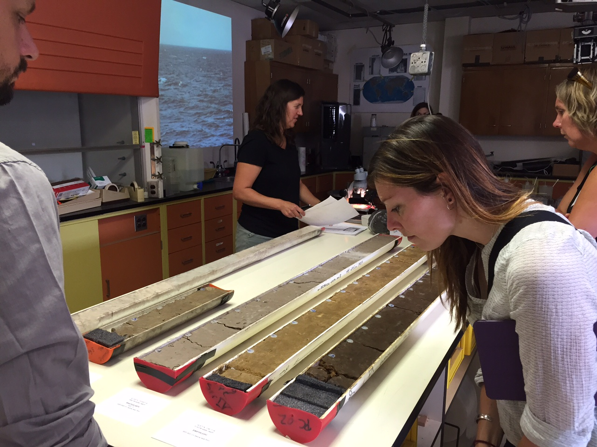
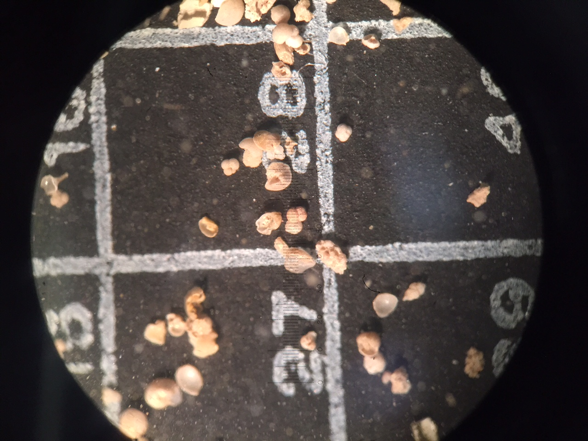

Teachers listening to Professor Ed Brook's (center with metal device in one hand) explanations during the ice core lab visit.

Ice sample in the hand of a teacher during the ice core lab visit.
Contact information for Participants and Presenters pdf
Certificate of Participation pdf
Reading
- Climate Change 2013: The Physical Basis, 5th Assessment Report from the Intergovernmental Panel on Climate Change Summary for Policymakers
- Ice Core Methods
Presentations
- Andreas Schmittner: Climate Science
- Ed Brook: Tiny Bubbles: The History of Greenhouse Gases and Climate from Polar Ice Cores
- Kathie Dello: Regional Climate Change Impacts
Teaching Material
Links
Oregon Health Authority-Climate Change
Benton County Environmental Health-Climate Change
Funded by the National Science Foundation's Marine Geology and Geophysics program, grant 1131834 and Paleoclimate Perspectives on Climate Change program, grant 1204243.

Last updated Aug. 10, 2015


Left: Teachers study sediment cores during the sediment core lab visit. Right: Shells of fossil foraminifera under a microscope.